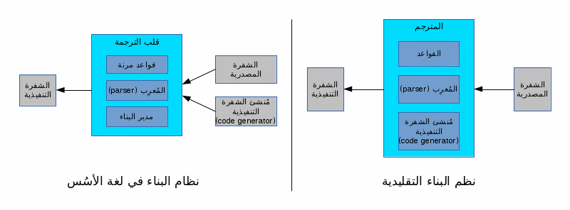
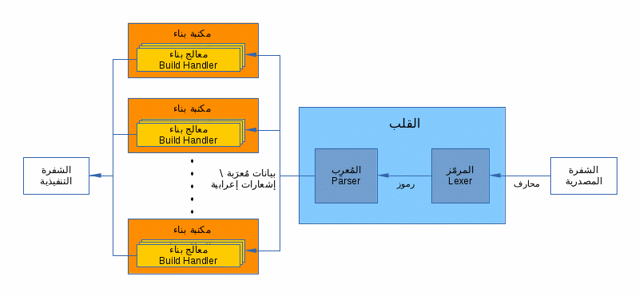
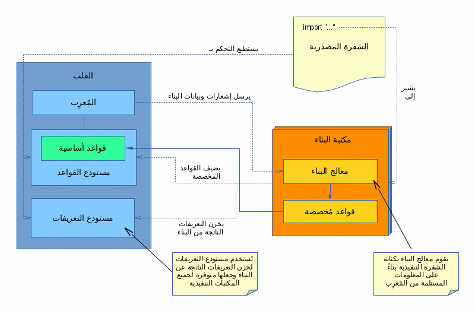
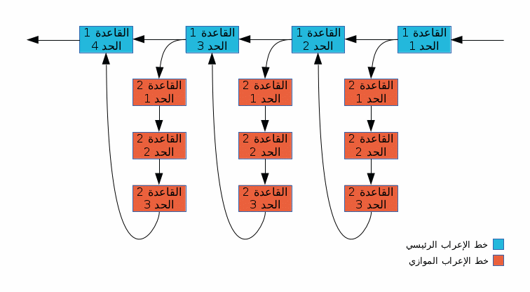

تصميم لغة الأسُس البرمجية
إفتح الكل أغلق الكلالمقدمة
مفهوم لغة الأسُس لبرمجيات الحاسوب
لغة الأسُس تعرّف برنامج الحاسوب تعريفاً لا يرتبط بطبيعة عمل البرنامج أو بيئته التنفيذية، وإنما تعرفه على أنه مجموعة من الجمل تتكون كل منها من حدّ أو مجموعة من الحدود وكل حدّ عبارة عن قيمة ثابتة أو اسم متغير أو تركيب أو أمر أو جملة أخرى أو مجموعة من الجمل. بُنيت على هذا التعريف وبصورته الشمولية قواعد أساسية للغة الأسُس وجُعلت هذه القواعد ديناميكية وأضيفت للغة الأسُس إمكانية إنشاء قواعد مشتقة منها وهو ما يجعل قواعد اللغة قابلة للتوسيع دون الإضرار بالشكل العام لقواعدها ودون التسبب بغموض الإعراب.نظام ترجمة مفتوح ومرن ولامركزي
بدل إنتاج مترجم مغلق يفهم أنماط البرمجة المرجوّة وكيفية إنشاء الشفرة التنفيذية، استبدلت لغة الأسُس هذا التصميم بتصميم مختلف يجعل الترجمة تتم بنظام مفتوح متعدد الأجزاء مع وجود جزء مركزي يعمل عملاً إدارياً ويوفّر الأسُس التي تُبنى عليها الأجزاء الأخرى. يتيح هذا الأسلوب توسيع اللغة وتطوير عملية الترجمة عن طريق استبدال أجزاء بأخرى أو إضافة أجزاء جديدة. هذا النظام صُمم بأسلوب مفتوح يتيح لأي مبرمج الوصول إلى الوحدات والبيانات الداخلية لنظام الترجمة لتطوير وحدات ترجمة جديدة وهو ما يجعل اللغة قابلة للتطوير من قبل مجتمع المبرمجين بدل أن تكون عملية التطوير حصراً على مجموعة محددة. يتيح هذا التصميم أيضاً إمكانية تطوير اللغة آنياً على عدة جبهات من قبل فرق مختلفة. الشكل التالي يوضح الفرق بين أسلوب الترجمة التقليدي وأسلوب الترجمة في لغة الأسُس:
التصميم العام
نظام الترجمة
بدل الاعتماد على مترجم أحادي (monolithic) تعتمد الترجمة في لغة الأسُس على نظام ترجمة مركّب ولا مركزي ينقسم إلى:- القلب: وهو الجزء المركزي في لغة الأسُس. يُعرّف القلب القواعدَ الأساسية ويعمل على تحليل الشفرة المصدرية وتنسيق عمل مكتبات البناء.
- مكتبات البناء: تعمل مكتبات البناء على تعريف القواعد المخصصة وتحويل بيانات التحليل إلى شفرة تنفيذية. هذه المكتبات تُربط بالقلب ديناميكياً ويُمكن للقلب تحميل عدد غير محدد من هذه المكتبات. تحميل هذه المكتبات يتم عبر أوامر في الشفرة المصدرية المراد ترجمتها.

مكتبات البناء ليست سوى مكتبات ديناميكية تحتوي على أصناف وتعريفات متعلقة بالقواعد وعملية الترجمة ويتم تحميلها بنفس الطريقة التي يتم فيها تحميل مكتبات أخرى، أي باستخدام الأمر import داخل الشفرة المصدرية نفسها التي يُراد ترجمتها، وبذلك يكون كل مشروع قادراً على اختيار الصفات اللغوية التي يحتاجها.يحتوي القلب على مستودع ديناميكي للتعريفات القواعدية يمكن لأي مكتبة بناء أن تضيف أو تعدل في محتواه لإضافة قواعدها الخاصة أو معالجات بنائها الخاصة. يحتوي القلب أيضاً على مستودع عام ومركزي للتعريفات يستخدم من قبل مكتبات البناء لتخزين ما ينتج من عملية البناء حسب حاجتها ما يجعل هذه التعريفات متوفرة بشكل عمومي لجميع المكتبات ومتوفرة أيضاً للشفرة المصدرية نفسها أيضاً.
الشكل التالي يوضح العلاقة بين الأجزاء المختلفة في عملية الترجمة:

يمكن أيضاً تعريف قواعد إضافية ومعالجات بناء داخل الشفرة المصدرية نفسها التي يتم ترجمتها، أي يستطيع البرنامج أن يعرف قواعده الخاصة شرط أن تسبق هذه التعريفات استخدامَها داخل الشفرة المصدرية.قواعد لغة الأسُس
قواعد لغة الأسُس تتصف بما يلي:- قواعد مبنية على البيانات (data driven): أي أن بالإمكان التحكم بالتعريفات القواعدية عن طريق متغيرات.
- قواعد متحركة (ديناميكية): قواعد لغة الأسُس متحركة وليست ثابتة، بمعنى أن قواعد اللغة قابلة للإضافة أو التعديل أثناء الترجمة.
- الإشتقاق القواعدي: يمكن في لغة الأسُس اشتقاق قواعد من قواعد أخرى باستخدام التوريث القواعدي الذي يسمح للقاعدة الوارثة أن ترث صفات القاعدة المورِّثة وتعدل ما تشاء منها. تمكّن هذه الخاصية المبرمجين من إنشاء قواعد جديدة مبنية على غيرها وتمكّن أيضا من إنشاء قوالب قواعدية.
- القوالب (templates): تحتوي قواعد اللغة على قوالب جاهزة يمكن للمبرمجين استخدامها لإضافة قواعدهم الخاصة. وجود هذه القوالب ضروري لضمان تناسق القواعد.
- التصميم الحزمي للقواعد (modular): تحتوي قواعد لغة الأسُس إمكانية إنشاء حزم من القواعد لتجميع القواعد المترابطة في حزمة واحدة وتسهيل الإشتقاق. على سبيل المثال، كل القواعد المرتبطة بالتراكيب مجموعة في حزمة واحدة يسهل الإشتقاق منها لإنشاء تراكيب مخصصة.
- البرنامج: هو مجموعة من الجمل.
- الجملة: تتكون من حد أو مجموعة متتالية من الحدود.
- الحد: أما قيمة ثابتة أو اسم متغير أو تركيب أو أمر أو جملة أو مجموعة من الجمل.
- الأمر: يتكون من كلمة متبوعة اختياريا بحد أو مجموعة متتالية من الحدود.
- التركيب: يتكون من حد واحد، أو ترابط هرمي من الحدود والمؤثرات.
تلاحظ من التعريف أعلاه أن القواعد الأساسية لا علاقة لها بطبيعة البرنامج أو البيئة التي يعمل بها، فهي لا تربط اللغة بمجال محدد بل تتركها مفتوحة على كل المجالات البرمجية. القلب لا يفهم إلا مجموعة بسيطة من القواعد المخصصة، منها أوامر تحميل المكتبات (import). عند تحميل مكتبات البناء تغذي هذه المكتبات القلب بقواعدها المشتقة من القواعد الأساسية وتبقى مسؤولة عن معالجة البيانات المُعربة الناتجة عن تلك القواعد. وتلقائيا يقوم القلب بربط القواعد الجديدة بتلك المكتبات ويقوم باستدعائها أثناء الإعراب كلما صادف تلك القواعد. ويستطيع القلب تحميل عدد غير محدد من تلك المكتبات ويقوم بمهمة التنسيق بينها.
تقنيات القواعد والتحليل
اعتماد البيانات في التعريفات القواعدية
يمكن للتعريفات القواعدية أن تعتمد على البيانات عن طريق متغيرات يتم استقبالها كمعطيات في التعريف القواعدي أو متغيرات عامة (global). المثال التالي يبيّن تعريف أمر مع ترك الكلمة التمييزية (keyword) متغيرة:
SubCmd (kwd:string) : kwd Expression.
IfCommand : SubCmd("if") Statement.
WhileCommand : SubCmd("while") Statement.
في المثال التوضيحي أعلاه، تجد أن تعريف SubCmd يستقبل سلسلة محارف كمعطى ويستعملها كثابت في التعريف، وتم استخدام هذا التعريف لتعريف أمري if و while.
الأمر لا يقتصر على استخدام المتغيرات كثوابت في التعريف القواعدي، بل يتعداها إلى امكانية استخدام المصفوفات وتطبيق العمليات القواعدية على عناصر تلك المصفوفات. على سبيل المثال:
BinaryOperation (kwds:list[string]) : Operand (kwds[0] | kwds[1] | ...) Operand. LogicalOperation : BinaryOperation(["and", "or", "xor"]). MathOperation : BinaryOperation(["+", "-", "*", "/"]).طريقة استخدام البيانات غير محددة، بل مفتوحة على كل الاحتمالات كما في استخدام البيانات في لغات البرمجة. على سبيل المثال يمكن تطبيق عناصر المصفوفة على قالب معين وتطبيق العمليات القواعدية عليها كما في المثال:
BinaryOperation (kwds:list[string]) : Operand (Command(kwds[0]) Command(kwds[1]) ...).
التصميم الحزمي للقواعد
بالأمكان تجميع التعريفات القواعدية في حزم بطريقة مشابهة للبرمجة كائنية المنحى. في المثال التالي نقوم بجمع التعريفات المتعلقة بالتراكيب في حزمة واحدة:
Expression : {
Add (kwds:=["+","-"]) : Multiply [(kwds[0] | kwds[1] | ...) Add].
Multiply (kwds:=["*","/"]) : Operand [(kwds[0] | kwds[1] | ...) Multiply].
Operand : Identifier | Literal.
}.
بالإمكان تعريف حزم داخل أخرى وبالإمكان لقواعد داخل حزمة معينة الإشارة إلى قواعد خارجها والعكس جائز أيضاً.
التوريث القواعدي
يمكن في قواعد لغة الأسُس استخدام التوريث لاشتقاق قاعدة من قاعدة أخرى. كما هو حال التوريث في البرمجة كائنية المنحى، فإن التوريث في قواعد الأسُس ينسخ صفات القاعدة المورِّثة إلى القاعدة الوارثة والتي بدورها تستطيع استبدال بعض هذه الصفات. على سبيل المثال، لو كان عندنا القاعدة التالية:LogicalOperation (kwds:=["and", "or"]) : Operand (kwds[0] | kwds[1] | ...) Operand.فيمكن اشتقاق قاعدة أخرى منها تعرف مزيداً من الكلمات التمييزية، كما يلي:
MyLogicalOperation -> LogicalOperation ( kwds := ["and", "or", "&&", "||"] ).الاشتقاق جائز أيضاً مع الحزم، أي يمكن اشتقاق حزمة من حزمة أخرى. في حالة الحزم فإن عناصر الحزمة المورِّثة ستنتقل كاملة إلى الحزمة الوارثة التي ستستطيع استبدال بعض العناصر أو إضافة عناصر أخرى. في المثال التالي نقوم بتعريف حزمة تشتق من حزمة أخرى وتغيّر أحدى القواعد فيها:
MyExpression -> Expression {
Operand : Identifier | Literal | "(" Add ")".
}.
الإعراب متعدد الأبعاد
الإعراب متعدّد الأبعاد يعني إمكانية تعريف قواعد معينة وتمييزها ليتم إعرابها بشكل موازٍ لعملية الإعراب الرئيسية. بمعنى آخر، يمكن للمُعرِب عند كل خطوة من خطوات الإعراب الرئيسي الخروج منه لإعراب القاعدة الموازية ومن ثم العودة إلى النقطة التي كان فيها من الإعراب الرئيسي. الشكل التالي يوضح هذه العملية.
يُستخدم هذا الأسلوب لتيسير تعريف القواعد التي قد تظهر في أي نقطة من البرنامج مثل المبدّلات على سبيل المثال. المثال التالي يوضّح الفائدة من هذا الأسلوب:DefStatement : "def" Identifier ":" Identifier. ParallelStatement : "@" Identifier.بتعريف ParallelStatement كقاعدة موازية تكون التعريفات التالية كلها جائزة:
@myattribute def myvar : mytype; def @myattribute myvar : mytype; def myvar : @myattribute mytype;بدون خاصية الإعراب متعدّد الأبعاد سنحتاج لتعريف DefStatement كما يلي:
DefStatement : [ParallelStatement] "def" [ParallelStatement] Identifier ":" [ParallelStatement] Identifier.
مبادئ تصميمية
- إستقلال القواعد عن السياق: يجب على قواعد اللغة أن تكون مستقلة عن سياق البرنامج، بمعنى آخر يجب على المعرِب (parser) أن يتمكن من إعراب الشفرة المصدرية دون الحاجة لمعرفة ما تعنيه تلك الشفرة أو بعض مفرداتها.
- التعبير المباشر عن الهدف: يجب على قواعد اللغة أن تمكن المبرمج من سلوك طريق مباشر للوصول لغايته، بمعنى آخر يجب تمكين المبرمج من كتابة برنامجه تبعا لوظيفته وليس تبعا للطريقة التي سيُترجم بها.
- تجنب الزوائد القواعدية: على سبيل المثال لا حاجة لفرض استخدام الأقواس إن كان بالإمكان تحليل الشفرة دون أقواس.
- تناسق القواعد والتصميم: يجب الحفاظ على التناسق في القواعد وفي تصميم المكتبات.
- منطقية القواعد على حساب الجمالية أو العرف السائد: لسنا بحاجة للإلتزام بما هو شائع بين لغات البرمجة، فالحفاظ على منطقية القواعد أهم من جماليتها أو عادات المبرمجين.
- ليس هناك معايير قياسية في تصميم لغات البرمجة، لكن هناك معايير قياسية في كتابة الرياضيات سائدة منذ مئات السنين، لذا فمشابهة المعايير الرياضية أولى شرط عدم الإخلال بمنطقية القواعد. على سبيل المثال الدوال في الرياضيات تكتب باستخدام الأقواس الاعتيادية وبالتالي فالدوال في لغة الأسُس تكتب أيضاً باستخدام الاقواس الاعتيادية.
- تقليص الإعتماد على قواعد جديدة: كلما كان تصميم القواعد أكثر شمولية، قلت الحاجة لتصميم قواعد جديدة.
- تعامد الخصائص والتصميم الحزمي: الحفاظ قدر الإمكان على تعامد الخصائص (orthogonality) والتصميم الحزمي (modular design).
- تمكين المبرمج من العمل على كافة المستويات بدءاً من التحكم المباشر بالعتاد وانتهاءاً بأعلى مستويات البرمجة.
- الحفاظ على مستوى واحد داخل المكتبة الواحدة: عند تصميم المكتبات المعيارية يجب تجنب الخلط بين المستويات داخل المكتبة الواحدة.
- دعم الخواص بأخفض مستوى ممكن: كلما كانت الخاصية متوفرة بمستوى منخفض أكثر كلما توسع نطاق توفرها.
- تمكين التحكم المركزي بأمن الخواص: انفتاح اللغة على كل شيء يولد الحاجة للتحكم مركزيا بما يُسمح للفريق باستخدامه. على سبيل المثال يستطيع مدير الفريق أن يمنع استخدام المؤشرات في مجال محدد أو يحصر مجالاً معيناً على استخدام مكتبات معينة دون غيرها.
- تجنب اتخاذ خطوات وقرارات نيابة عن المبرمج: يجب أن يعلم المبرمج كيف سيتم التعامل مع برنامجه من قبل نظام الترجمة. على سبيل المثال، من غير الملائم أن تقرر مكتبة البناء أسلوب إدارة الذاكرة دون إعطاء المبرمج القدرة على التحكم بذلك القرار.
- تجنب الحدود المصطنعة: على سبيل المثال، لا تحرم المبرمج إمكانية استخدام المؤشرات المباشرة في سياق معين إذا كان استخدامها ممكناً في ذلك السياق. حرمان المبرمج من خاصية معينة فقط لأن هذه الخاصية قد يُساء استخدامها عذر غير مقبول.
المكتبات المعيارية
- مكتبات البناء: وهي مجموعة من مكتبات البناء لدعم أنماط أساسية من البرمجة.
- مكتبات تنفيذية: وهي المكتبات التي تحتوي على مجموعة دالات وأصناف أساسية يستعملها البرنامج أثناء التنفيذ مثل مكتبات الدالات الرياضية أو مكتبات التعامل مع سلاسل المحارف.
- أنماط البرمجة
- البرمجة كائنية المنحى (object-oriented programming) بكافة خواصها المعهودة.
- البرمجة الإجرائية (procedural programming).
- البرمجة الوظيفية (functional programming).
- البرمجة جانبية المنحى (aspect-oriented programming).
- تعدد الأنماط البرمجية داخل البرنامج الواحد.
- مستويات البرمجة. توفر المكتبات المعيارية ثلاثة مستويات من البرمجة:
- المستوى الأول، وهو أكثرها انخفاضا. يوفر هذا المستوى الخاصيات الأساسية للغة مثل إيعازات الحلقات والجمل الشرطية والتعريفات وغيرها.
- المستوى الثاني. يوفر هذا المستوى مكتبات التعامل منخفض المستوى مثل التعامل مع سلاسل المحارف والمكتبات الرياضية والتعامل مع النظام وغيرها.
- المستوى الثالث. يوفر هذا المستوى مكتبات التعامل عالي المستوى مثل التعامل المُيسًَر مع الذاكرة والتنفيذ المتوازي ومكتبات التعامل مع قواعد البيانات وغيرها.
- كل الأصناف من المعلومات تعامَل معاملة الكائنات. على سبيل المثال، يمكن اشتقاق كائنات جديدة من الأعداد الصحيحة (int).
- الدالّات متعددة المخارج والمداخل.
- توزيع العمليات. أيْ تنفيذ عملية معينة على أكثر من كائن دون تكرار كتابة تلك العملية، أو تنفيذ أكثر من عملية على كائن معين دون تكرار كتابة ذلك الكائن.
- القوالب (templates).
- التنفيذ المتوازي: ستوفر المكتبات المعيارية خواصاً تيسر التنفيذ المتوازي.
- أوامر تسهل التفرع داخل الدالة الواحدة أو استدعاء دالات أخرى بشكل متوازي.
- التفرع التلقائي عند الحلقات المعلّمة للتنفيذ المتوازي.
- التفرع التلقائي عند الدالّات المعلمة للتنفيذ المتوازي.
- التحكم التلقائي بعدد السلاسل التنفيذية لضمان سرعة التنفيذ القصوى.
- المزامنة التلقائية للموارد المعلّمة بتلك الخاصية.
- أوامر للتراسل بين السلاسل التنفيذية.
- العمليات متعددة البيانات (single instruction multiple data).
- التعامل مع الإستثناءات (exception handling).
- المبدّلات: إمكانية تعريف وحدات برمجية يمكن تطبيقها أو إضافتها على وحدات برمجية أخرى لتغير من خواصّها. هذه الخاصية تمكن البرمجة جانبية المنحى إلى جانب إمكانيات أخرى.
- الكائنات المتحركة (الدينامية). وتوفر المكتبات امكانية استخدام الكائنات الدينامية جنباً إلى جنب مع الكائنات الساكنة.
- برمجة الزبون والخادم (client-server development).
- التنفيذ أثناء الترجمة: تمكن هذه الخاصية تنفيذ الأوامر أثناء الترجمة للتحكم بالترجمة نفسها وماتنتجها.
- توفير معلومات التعريفات أثناء التنفيذ اختياريا.
- حرية الإختيار بين التنفيذ التلقائي (interpretation)، أو الترجمة إلى شفرة وسطية أو الترجمة مباشرة إلى لغة الآلة، مع حرية الدمج بين هذه الخيارات وحرية اختيار الآلة التي يُترجم لها البرنامج.
نظرة على القواعد
التراكيب
تتكون التراكيب من حدود تربطها مؤثرات (operators) بشكل مشابه للّغات الشائعة الأخرى. وفيما يلي قائمة بأهم المؤثرات المتوفرة:مؤثر النفي: ^
مؤثر أو: |
مؤثر أو حصرية (xor): !
مؤثر و: &
العمليات الحسابية: +، -، *، /
العمليات البِتّية (bitwise): &، |، !، ^
العمليات المنطقية: &&، ||، !!، ^^
المقارنات: <، >، =>، =<، =
التعيين: =:
العمليات التعيينية: =+، =-، =*، =/، =|، =&، =!، =^
القوائم تُفصل بالفاصلة. على سبيل المثال: a,b,c
تجميع الحدود يتم باستخدام الأقواس الإعتيادية: ()
الحلقات
For: "for" Initial_Expression "," Condition_Expression "," Update_Expression (Statement|Block). While: "while" Expression (Statement|Block). Do-While: "do" (Statement|Block) "while" Expression.
الجمل الشرطية
"if" Expression (Statement|Block) ["else" (Statement|Block)].
التعريفات
كل التعريفات في اللغة تتم باستخدام أمر def بما في ذلك تعريف متغيرات أو ثوابت أو دالّات أو أصناف أو غيرها. والصيغة العامة كالتالي:"def" name ":" body.قيمة body يمكن أن تكون دالّة أو صنفا أو مجالا أو أسم صنف أو غيرها وذلك موضح فيما يلي:
تعريف متغير:
"def" name ":" type.تعريف ثابت:
"def" name ":" @const type.تعريف دالة:
"def" name ":" "function" "(" Input_List ")" "=>" "(" Output_List ")" Block.
تعريف صنف:
"def" name ":" "class" [Inheritance_Specifier] Block.تعريف مجال:
"def" name ":" "namespace" Block.ويستخدم إيعاز def أيضا لكافة التعريفات الأخرى ومن بينها المصفوفات والمؤشرات المبينة أدناه.
المصفوفات
تعرّف المصفوفات باستخدام أمر def وبالشكل التالي:"def" name ":" "array" "[" type, number "]".ولتحديد حجم المصفوفة ديناميكياً تستخدم الصيغة التالية:
"def" name ":" "array" "[" type "]" "(" number ")".
"def" name ":=" "array" "[" type "]" "~new" "(" number ")".
استخدام المصفوفات:
name "(" number ")".
المؤشرات
تعّرف المؤشرات باستخدام أمر def أيضا وبالشكل التالي:"def" name ":" "ptr" "[" type "]".وللدخول إلى الموقع الموُشَّر يستخدم مؤثر cnt~ بعد اسم المؤشر:
name "~cnt".وللحصول على موقع متغير معين يستخدم مؤثر ptr~ بعد اسم المتغير:
name "~ptr".
الدمج في التعريفات
يمكن أيضا الدمج بين التعريفات باستخدام def. مثلا يمكن تعريف مؤشر على مصفوفة، أو مؤشر على دالة, أو مصفوفة من المؤشرات، إلى أخره. مثلا تعريف مصفوفة من مؤشرات الدالّات يتم بالشكل التالي:"def" name ":" "array" "[" "ptr" "[" "function" "(" Params ")" "]" "]".
المبدّلات
يمكن للمبدّلات أن تظهر في أي مكان في البرنامج وليس بالضرورة في بداية الجملة. وتعرّف المبدّلات بهذا الشكل:"@" name [ Expression ].
الأقواس الهلالية والأقواس المعقوفة
تستخدم الأقواس الهلالية في الأمور التي تُعالج أثناء تنفيذ البرنامج مثل جمع الحدود داخل التراكيب أو إرسال المدخلات إلى الدالّات، بينما تستخدم الأقواس المعقوفة في الأمور التي تُعالج أثناء الترجمة مثل تحديد نوع المؤشر أو المصفوفة. بمعنى آخر، إن كانت المعلومة مرسلةً إلى المترجم نفسه تُسخدم الأقواس المعقوفة، وإلا فالأقواس الهلالية.الأقواس الحاصرة {}
تستخدم الأقواس الحاصرة لحصر مجموعة من الجمل في كتلة واحدة. وتستخدم هذه الكتل في جواب الجمل الشرطية على سبيل المثال أو في متن الدالّات أو الأصناف أو المجالات.
Block: "{" [ Statement_List ] "}".
Statement_List: Statement { ";" [Statement] }.
الفصل بين الجمل
تستخدم الفاصلة المنقوطة للفصل بين الجمل بطريقة مشابهة للفاصلة الإعتيادية التي تفصل بين الحدود داخل القوائم. بمعنى آخر فإن الفاصلة المنقوطة ليست جزءاً من الجملة ويُمكن إهمالها إن لم يأت بعدها جملة أخرى.المنظق في بعض الخيارات النحوية
- أقواس الدالّات:أُستخدمت الأقواس الاعتيادية مع الدالّات في الرياضيات منذ القدم، لذا تم الالتزام بذات الاسلوب مع دالّات لغة الأسُس.
- معطيات الأوامر: معطيات الأوامر (مثل فعل الشرط في الجمل الشرطية) تخلوا من الأقواس ببساطة لأنها لا حاجة لها من منظور إعرابي لذا فإن إضافتها لا معنى له.
- علامة التعيين: أُستخدم لتعيين قيمة جديدة في متغير الرمز := وذلك لأن الرمز = رياضياً أقرب في معناه إلى المقارنة منه إلى التعيين. كذلك فإن الرمز := ينسجم مع += و -= وغيرها من رموز التعيين بينما ينسجم الرمز = مع رموز المقارنة الأخرى مثل >= و <= وغيرها.
- يُفضل البعض البرامج بدون علامة الفصل بين الجمل (;) ولكن إن كان الأمر صحيحاً فلماذا لدينا تنقيط في اللغات البشرية؟
- رمز النفي ^ أستخدم بدل ! لأن الأخير يُستخدم لتمثيل العملية xor لقربه من رمز | الذي يمثل or.
- عوملت الكلمات الترميزية public و private وما شابههما كمبدّلات (أي ببدئهم بالرمز @) لأنهم ببساطة ليسوا أكثر من معلومات وصفية يستخدمها نظام الترجمة لكنها ليست عمليات تؤثر على طريقة تنفيذ البرنامج.
- استخدمت الكلمة الترميزية def لتعريف الدالّات والفئات كي نتمكن من حصر كامل التعريف في الجهة التي تلي النقطتين بدل أن يكون اسم الدالة أو الفئة في وسط التعريف. يساعد هذا الأمر على تيسير فهم التعريفات خصوصاً مع التعريفات المركبة مثل تعريف مؤشر إلى دالّة أو مصفوفة مؤشرات إلى دالّات.
- استخدمت الأقواس الهلالية للولوج إلى عناصر المصفوفة بدل الأقواس المعقوفة لأن الأخيرة تستخدم لمعطيات الترجمة. ولنفس السبب استخدمت الأقواس الاعتيادية لتحديد حجم المصفوفة ديناميكياً بينما استخدمت الأقواس المعقوفة لتحديد نوع المصفوفة وهو ما يندرج ضمن معطيات الترجمة.
أمثلة
import "System";
def HelloWorld : namespace
{
def main : function
{
print("Hello World!");
return 0
}
}
import "System";
def Factorial : namespace
{
def factorial : function (i:int)=>(int)
{
if i = 0 return 1 else return i * factorial(i-1)
};
def main : function
{
print("Factorial of %d is %d", 5, factorial(5));
return 0
}
}
import "System";
def While : namespace
{
def main : function
{
def i : int := 1;
while i < 10 {
print("%d\n", i);
++i;
};
return 0
}
}
import "System";
def Arrays : namespace
{
def main : function
{
def a : array[int](10);
for i:int:=0, i<10, ++i a(i) := i;
for i:int:=0, i<10, ++i print("%d\n", a(i));
return 0
}
}
import "System";
def Pointers : namespace
{
def main : function
{
def p : ptr[int], i : int;
i := 10;
p := i~ptr;
print("%d\n", p); // prints the address of i.
print("%d\n", p~cnt); // prints the value of i.
return 0
}
}
import "System";
def Casting : namespace
{
def main : function
{
def i : int, f : float;
i := 10;
// Treat the bits of i as a floating point number by doing this:
// Get the pointer of i,
// then cast the pointer to a pointer of float,
// then take the contents of that float pointer.
f = i~ptr~cast[ptr[float]]~cnt;
print("%f\n", f);
return 0
}
}
import "System";
def ClassDefinition : namespace
{
def BaseClass : class
{
@private def i : int;
@private def j : int;
@public def constructor : function (a:int, b:int)
{
this.i := a;
this.j := b;
};
@public def getI : function ()=>(int) { return this.i };
@public def getJ : function ()=>(int) { return this.j }
};
def ChildClass : class inherits BaseClass
{
@private def k : int;
@public def constructor : function (a:int, b:int, c:int)
{
parent.constructor(a, b);
this.k := c
};
@public def getK : function ()=>(int) { return this.j }
}
}
جميع الحقوق محفوظة لـ سرمد خالد عبداللّه 2014م \ 1435هـ.
نُشر هذا الملف برخصة الأسُس العامة (Alusus Public License)، الإصدار 1.0، والمضمّنة مع هذا الملف
والمتوفرة أيضاً على الرابط http://alusus.net/alusus_license_1_0. يرجى قراءة الرخصة للتعرف على شروط الاستخدام والنسخ.